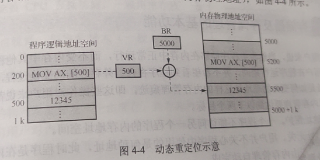

操作系统
第二章-处理器管理
第三章-进程同步与通信
第四章-存储管理
第五章-设备管理
操作系统
第一章
操作系统
定义
操作系统是介于计算机硬件和应用软件之间的一个软件系统，即操作系统的下面是硬件平台，而上面则是应用软件。
1 | (1) 控制和管理计算机系统的所有硬件和软件资源。 |
操作系统的设计目标
方便性、有效性、可扩展性、开放性、可靠性、可移植性。
操作系统的主要功能
为了高效地使用计算机软、硬件资源，提高计算机系统资源的利用率和方便用户使用，在计算机系统中都采用多道程序设计技术。
主要功能如下
1.处理器管理；2.存储管理；3.设备管理；4.文件管理；5.用户接口；6.网络与通信管理
操作系统的基本特征
并发性、共享性、虚拟性、不确定性
操作系统的逻辑结构
1 | 用户态和内核态的划分 |
主要操作系统的类型
批处理操作系统
1 | 早起的批处理操作系统是单道批处理操作系统，其特征 |
分时操作系统
1 | 工作方式： |
时间片: 分时操作系统将 CPU 的执行时间划分为若干个片段，这些片段称为时间片。
1 | 分时操作系统特性: |
操作系统运行基础
1.中央处理器
一般由集成在一片或几片大规模或超大规模集成电路中的运算器、控制器、就存起和高速缓存构成
运算器
主要负责指令中的算数和逻辑运算，由算术逻辑单元（ALU）、累加寄存器、数据缓冲寄存器和条件状态寄存器等组成，运算器是计算机计算的核心。
控制器
是计算机系统的控制中心，主要控制程序运行的流程。
寄存器
是CPU内部指令处理过程中暂存数据、地址以及指令信息的存储设备，在计算机的存储系统中它具有最快的访问速度。
高速缓存
处于CPU和物理内存之间，一般由控制器的内存管理单元来管理，它的访问速度快于内存但低于寄存器。
寄存器分为：用户可见寄存器（通用、数据、地址、条件码寄存器）；控制和状态寄存器（程序计数器、指令寄存器、存储器地址寄存器、存储器数据寄存器、程序状态字寄存器）。
2.特权指令
（1）有关I/O的指令。
（2）访问程序状态字寄存器的指令。
（3）存储特殊寄存器的指令。
（4）其他访问系统状态与直接访问系统资源的指令等。
3. CPU状态
CPU状态分为内核态和用户态两种
内核态：指操作系统程序运行的状态。
用户态：用户程序运行的状态
中断技术
中断具有以下三个特点：是随机的；可恢复的；是自动处理的
中断分类:
第二章 处理器管理
进程
进程的定义
进程是一个可并发执行的、具有独立功能的程序关于某个数据集合的一次执行过程。也是操作系统进行资源分配和保护的基本单位。
进程的结构
进程实体 = 进程段 + 相关数据段 + PCB
进程的特征
动态性、并发性、独立性、异步性、结构性
进程与程序的区别
1 | （1）程序是指令的有序集合，是一个静态的概念； |
进程的状态及转换
两状态进程模型
进程的三态模型
进程的五态模型

进程的挂机
具有挂机状态的进程状态转换
进程控制块
进程控制块的组织方式
线性表方式
链接表方式
索引表方式
进程控制
进程控制原语
一个特殊的程序段称为原语，同时意味着这段程序的执行具有原子性。
原语也称广义指令，可将原语中的几条指令看作一个整体，即构成一条“广义”上的指令。
进程的创建原语
1 | int Create(int n,int k, List *s,List *r) // 创建原语 |
进程的撤销原语
1 | void Destory(string name) |
进程的阻塞原语
1 |
|
进程的唤醒原语
1 | void Wakeup(List r) |
进程的挂起和激活原语
挂起
（1）根据被挂起进程的进程标识符，从PCB集合中查找该进程的PCB，找到后从中读出该进程的状态。
（2）修改PCB中的进程状态。
（3）将被挂起进程的PCB复制到指定的内存区域，以便用户或父进程考察该进程的运行情况。
（4）将被挂起进程的非常驻部分从内存换出至外存的对换区。
（5）若被挂起进程挂起前为运行态，则执行进程调度程序从活动就绪队列中选中一个进程占用CPU运行。
激活
（1）将被激活的进程由外村调入到内存。
（2）修改该进程的状态。
（3）若系统采用抢占式调度策略且被激活的进程其状态为活动就绪，还需比较被激活进程与当前正在运行进程的优先级，如果被激活进程的优先级高则需重新进行进程调度，即暂停当前运行进程的执行，而将CPU分配给刚激活的优先级更高的活动就绪程序。
CPU 的三级调度
高级调度（作业调度）
按一定的调度算法把外存上处于后备作业队列中的作业调入内存，为它们分配所需的资源并创建进程，然后将新创建的进程插入到系统的进程就绪队列中。
选择作业、分配资源、创建进程、作业控制、回收资源
中级调度（交换调度）
在内存资源紧张的情况下，从内存中暂不运行的进程中选择一个或数个进程挂起，即由内存调至外存，从而使外存上具备运行条件的就绪程序能够及时调入内存运行。
低级调度（进程调度）
按照一定的调度算法将CPU分派给进程就绪队列中的某个进程。
调度队列模型
仅有进程调度的调度队列模型
具有高级和低级调度的模型
具有三级调度的模型
常用调度算法
先来先服务调度算法(FCFS)
FCFS调度算法是一种非抢占式调度算法，当某进程/线程占用了CPU后就一直运行，直到该进程/线程运行结束才放弃CPU，或在运行中因发生某等待事件被阻塞而放弃CPU。
短作业/短进程优先优度算法(SJF/SPF)
时间片轮转调度算法(RR)
高响应比优先调度算法(HRRF)

优先级调度算法
多级反馈队列调度算法(MLFQ)
第三章 进程同步与通信
信号量机制
信号量代表一类物理资源，它是相应物理资源的抽象。
信号量可分为整型信号量和结构信号量。
若信号量为S，则P操作原语和V操作原语可以分别描述如下：
1 | int S; |
结构体信号量
1 | typedef struct |
使用信号量实现进程同步
若干进程为完成一个共同的任务而互相合作，这就需要相互合作的进程在某些协调点处，插入对信号量的P操作或V操作，以便协调它们的工作。
次序并发执行的程序描述如下:
1 | Semphore a,b,c,d; |
第四章 存储管理
程序装入
程序装入是指装入程序根据内存当前的实际使用情况，将程序装入到内存合适的物理位置。装入操作针对的是程序的整个逻辑地址空间，而对应的物理地址空间既可以是连续的，夜可以是离散的。程序装入内存后并不能立即运行，因为程序中凡涉及访问内存地址的指令其访存地址仍然是逻辑地址，而部署内存中的实际物理地址，因此无法实现直接访问。
静态重定位
动态重定位
存储器及存储管理的基本功能
内存管理要达到两个目标：地址保护和地址无关
存储管理应具有以下四个基本功能：内存空间的分配与回收；实现地址转换；内存空间的共享与保护；内存空间的扩充。
多级存储器体系
页置换算法
常用的页置换算法
最佳置换算法
实质是系统预测进程今后要访问页序列，需要进行页置换时，所选择的置换页是那些奖励啊不会被访问的页，或者是在最长时间后被访问的页，即置换该页不会造成刚将此页置换出内存又要立即把它再置换回内存的情况出现。
最佳置换算法是一种理想化的置换算法。
按照最佳算法进行页置换
先进先出算法(FIFO)
先进先出算法总是淘汰最先进入内存的页，即选择在内存中驻留时间最久的页予以淘汰。
最近最久未使用算法(LRU)
第五章 设备管理
设备的分类
按使用特性分类:存储设备；I/O设备
按信息传输速率分类: 低速设备、中速设备、高速设备
按信息传输单位分类：字符设备、块设备
按资源分配方式分类：独占设备、共享设备、虚拟设备
按设备的从属关系分类：系统设备和用户设备
设备管理的目标和功能
目标
一是为了提高系统资源的利用率；二是方便用户使用计算机。设备管理的密保夜完全体现了这两点，即强调效率和通用性。
设备管理要达到的目标有以下四个：
方便性、并行性、均衡性、独立性
功能
（1）提供设备使用的接口
（2）进行设备的分配与回收
（3）缓冲区管理
（4）实现物理I/O设备的操作。
（5）设备的访问和控制